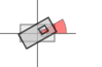

B - The type of the image builder.public abstract class ImageBuilder<B extends ImageBuilder<B>> extends Object implements ImageDrawable
| Constructor and Description |
|---|
ImageBuilder() |
| Modifier and Type | Method and Description |
|---|---|
protected B |
add(Buildable builder)
Adds a new child builder.
|
B |
align(HorizontalAlign horizontalAlign,
VerticalAlign verticalAlign)
Aligns the primitive (shape, text or image) relative to its enclosing
bounding box.
|
B |
center(double x,
double y)
Sets the x and y coordinate of the point(s) center in map units.
|
B |
center(double x,
VerticalAlign y)
Sets the point(s) center relative to the last previous drawn primitive.
|
B |
center(HorizontalAlign x,
double y)
Sets the x and y coordinate of the point(s) center relative to the
previous drawn.
|
B |
center(HorizontalAlign x,
VerticalAlign y)
Sets the x and y coordinate of the point(s) center relative to the
previous drawn primitive.
|
List<Buildable<?,?>> |
getChilds()
Gets primitive child's (optional) in the case there are any.
|
Path |
getPath()
Gets the path to the image.
|
Set<Point<?,?>> |
getPoints()
Gets the point(s) center(s) (in the case the pimitives represents one or
more point(s)) or null in the case the primitive is not a point.
|
Shape |
getPreviousShape() |
S |
getStyle()
Gets the style.
|
DrawableTransformable |
getTransform()
Gets the individual transformation parameters.
|
boolean |
hasChilds()
Determines whether the buildable has childs (=true) or not (=false).
|
boolean |
isPoint()
Determines whether the primitive is a point (one ore more center(s) have
been set).
|
B |
offset(double offsetX,
double offsetY)
Offsets the primitive in x as well as in y axis direction.
|
B |
offsetX(double offsetX)
Offsets the primitive in x axis direction.
|
B |
offsetY(double offsetY)
Offsets the primitive in y axis direction.
|
protected B |
path(Path imagePath)
Sets the image.
|
protected B |
path(String first,
String... more) |
protected B |
path(URI imageURI)
Sets the image.
|
B |
rotate(double rotation)
Sets the rotation in the configured angular units.
|
B |
scale(double scaleFactor)
Scales the primitive with the given scale factor in x and y direction.
|
B |
scale(double scaleX,
double scaleY)
Scales the primitive with the given scale factor in x and y direction.
|
B |
scaleX(double scaleX)
Scales the primitive with the given scale factor in x direction.
|
B |
scaleY(double scaleY)
Scales the primitive with the given scale factor in y direction.
|
void |
setStyle(S style)
Sets the style.
|
void |
setTransform(DrawableTransformable transform) |
void |
setUp(Shape previousDrawnShape)
Is called before the drawable is drawn.
|
void |
tearDown()
Cleanup code.
|
B |
transparence(double tranparence)
Sets the primitives transparency.
|
B |
unit(Angle angleUnits)
Sets the angle units.
|
B |
unit(Transparence transparenceUnits)
Sets the transparency units.
|
B |
visible(boolean isVisible)
Sets whether the primitive is drawn (is visible = true) or not (is not
visible = false).
|
clone, equals, finalize, getClass, hashCode, notify, notifyAll, toString, wait, wait, waitgetStyle, getTransform, setStyle, setTransformpublic Path getPath()
getPath in interface ImageDrawableprotected B path(Path imagePath)
imagePath - The image path.protected B path(URI imageURI)
imageURI - The image URI.public Set<Point<?,?>> getPoints()
Buildablepublic Shape getPreviousShape()
getPreviousShape in interface Buildable<S extends Styleable<S>,B extends org.openmap4u.builder.Builder<S,B>>public void setUp(Shape previousDrawnShape)
Buildablepublic B visible(boolean isVisible)
Buildabletrue.public B transparence(double tranparence)
Buildabletransparence in interface Buildable<S extends Styleable<S>,B extends org.openmap4u.builder.Builder<S,B>>tranparence - The primitives transparency.
myBuilder.transparence(0) | myBuilder.transparence(25) | myBuilder.transparence(50) | |||
myBuilder.transparence(75) | myBuilder.transparence(100) | - | |||
public B align(HorizontalAlign horizontalAlign, VerticalAlign verticalAlign)
Buildablealign in interface Buildable<S extends Styleable<S>,B extends org.openmap4u.builder.Builder<S,B>>horizontalAlign - The horizontal alignment.verticalAlign - The vertical alignment.
myBuilder.align(LEFT, TOP) |
myBuilder.align(CENTER, TOP) |
myBuilder.align(RIGHT, TOP) | |||
myBuilder.align(LEFT, MIDDLE) |
myBuilder.align(CENTER, MIDDLE) |
myBuilder.align(RIGHT, MIDDLE) | |||
myBuilder.align(LEFT, BOTTOM) | myBuilder.align(CENTER, BOTTOM) |
myBuilder.align(RIGHT, BOTTOM) |
public final B offset(double offsetX,
double offsetY)
Buildable myBuilder.offset(.25, .5) = public final B offsetX(double offsetX)
Buildablepublic final B offsetY(double offsetY)
Buildablepublic final B scale(double scaleFactor)
Buildablepublic final B scale(double scaleX,
double scaleY)
Buildable myBuilder.scaleX(1.7,2.8) = public final B scaleX(double scaleX)
Buildablepublic final B scaleY(double scaleY)
Buildablepublic final B unit(Angle angleUnits)
Buildablepublic final B unit(Transparence transparenceUnits)
Buildablepublic final B rotate(double rotation)
Buildablerotate in interface Buildable<S extends Styleable<S>,B extends org.openmap4u.builder.Builder<S,B>>rotation - The rotation in angle units. myBuilder.rotate(30) = 
myBuilder.roate(70) = public final B center(double x,
double y)
Buildablepublic final S getStyle()
Drawablepublic final void setStyle(S style)
Drawablepublic final DrawableTransformable getTransform()
DrawablegetTransform in interface Drawable<S extends Styleable<S>>public void setTransform(DrawableTransformable transform)
setTransform in interface Drawable<S extends Styleable<S>>public boolean isPoint()
Buildablepublic void tearDown()
Buildablepublic B center(HorizontalAlign x, VerticalAlign y)
Buildablecenter in interface Buildable<S extends Styleable<S>,B extends org.openmap4u.builder.Builder<S,B>>x - The horizontal coordinate relative to the last previous drawn
primitive.y - The vertical coordinate relative to the last previous drawn
primitive.public B center(HorizontalAlign x, double y)
Buildablecenter in interface Buildable<S extends Styleable<S>,B extends org.openmap4u.builder.Builder<S,B>>x - The horizontal coordinate relative to the last previous drawn
primitive.y - The y coordinate of the point in map units.public B center(double x,
VerticalAlign y)
Buildablepublic List<Buildable<?,?>> getChilds()
Buildablepublic boolean hasChilds()
Buildableprotected B add(Buildable builder)
builder - The child builder to add.Copyright © 2013–2014 openMap4u. All rights reserved.